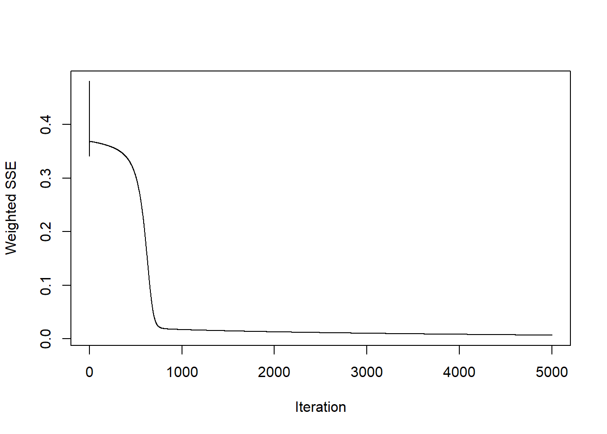
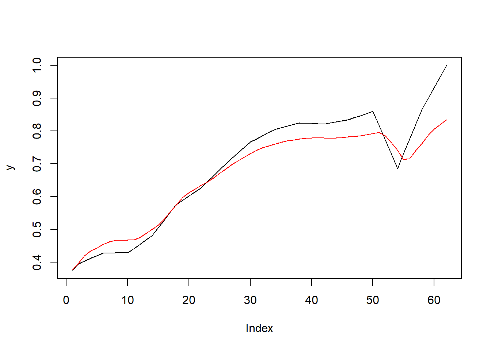
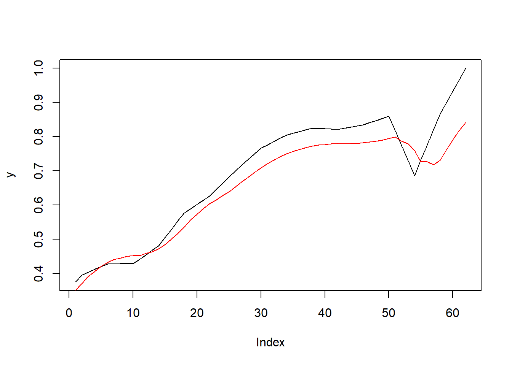

Chapter 8 Prediccion usando redes neuronales
Finalizamos nuestro analisis a nuestra serie de tiempo con los ultimos modelo candidados, bueno, mas que modelos, usaremos dos redes neuronales de memoria a corto plazo llamadas redes de Elman y Jordan, para dar una prediccion a nuestros datos. Ojo, la prediccion factible solo se hara hasta el primer trimestre del año 2023 (debido a que los datos finalizan en el año 2022 y la serie que trabajamos es una interpolacion donde se incluyeron datos de los trimestres entre año y año)
NOTA: Antes de comenzar con el entrenamiento de nuestras redes neuronales, se normalizaran nuestros datos, practica recomendada en el uso de este tipo de redes para poder trabajar de forma mas interpretativa (ademas de mejorar el redimiento y estabilidad).
Con la serie normalizada, escogemos la cantidad de datos de entrenamiento, este proceso es arbitrario, y en mi caso se hara con el 50% de los datos totales. El resto de datos se usara para prueba.
A continuacion definimos los valores de entrenamiento en serie. Este dato es arbitrario sin embargo tomare solo 4 valores debido a dos principales razones: * Como mi serie de tiempo es trimestral, 4 trimestres completan un año, es decir un ciclo completo de estacionalidad anual (que es el indice de tiempo de los datos originales) * No se disponen de muchos datos historicos (de hecho se tuvo que hacer la interpolacion para aumentar la cantidad de datos al minimo posible) * Se hara una prediccion de muy corto plazo
y<-as.zoo(S)
x1<-Lag(y,k=1)
x2<-Lag(y,k=2)
x3<-Lag(y,k=3)
x4<-Lag(y,k=4)
slog<-cbind(y,x1,x2,x3,x4)
slog<-slog[-(1:4),]Ahora definimos (Por conveniencia) los valores de entrada y salida de las respectivas redes neuronales
A partir de aqui ya podemos crear nuestras redes neuronales y entrenarlas
8.1 Red neuronal de Elman
Creamos la red neuronal
fit<-elman(inputs[train],
outputs[train],
size=c(3,2), #Dos capas ocultas, una con 3 neuronas y la otra con dos
learnFuncParams=c(0.1), #Tasa de aprendizaje del 0.1
maxit=5000) #Numero maximo de interaciones Luego vemos que el error converge a cero de forma muy rapida, a continuacion podemos hacer predicciones con los datos restantes de la serie (el 25%)
y<-as.vector(outputs[-train])
plot(y,type="l")
pred<-predict(fit,inputs[-train])
lines(pred,col="red")
Luego podemos observar que el resultado se ajusta bien a los primeros instantes de la grafica pero a partir del paso del tiempo esta pierde su ritmo y empieza a variar significativamente con los datos originales, se resalta entonces que a partir del mayor decrecimiento de la serie original, el resultado propuesto por la red neuronal de Elman ya no tienen ninguna similitud, esto es evidencia suficiente para concluir que ninguna prediccion hecha a partir de aqui sera factible a considerar
NOTA: El modelo se entreno con la mitad de los datos, sin embargo se hicieron pruebas anteriores con el 75% de los datos y se llego a conclusiones similares, se escogio mas datos en la verificacion para que la grafrica final tuviera mas similitud con la serie original
8.2 Red neuronal de Jordan
Creamos la red neuronal

Aqui observamos que los resultados de la red de jordan se ajustan un poco peor a comparacion de los de la red de Elman, aun hay una dispersion significativa respecto a la tendencia central de la serie original, por lo que estos resultados tampoco son utiles para modelar una prediccion ya que hay demasiada variacion
Finalmente concluimos que las redes neuronales de Elman Y Jordan no son utiles para proponer una prediccion valida a nuestra serie de tiempo a partir del semestre siguiente del año 2022(que es donde termina el registro de nuestros datos)